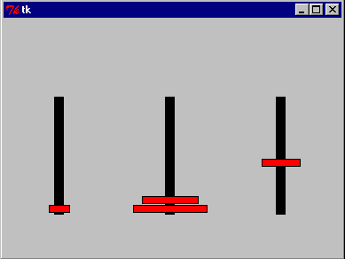

The Tower of Hanoi is a classic game that is often emulated on computers to demonstrate recursion.
The game runs as follows. There are a number of discs each with a hole in the center. Each disc can fit on any of 3 pegs and each peg is high enough to hold all the discs in a stack. In the initial configuration all the discs are stacked on the first peg with the largest disc on the bottom and the smallest on top. A disc is never stacked on top of a smaller disc. The problem is to move the discs, one at a time from peg to peg in such a way that this is always true and to finally end up with all of the discs on peg 3 in the original order.
The solution is elegant. Let's call the three pegs A, B, and C. If you don't know how to move 5 discs from A to C (using B for intermediate storage), then just move 4 discs from A to B, one disk from A to C (this is really easy) and then move 4 discs from B to C. Can't do 4 discs? Well then, move just 3 ...
Guido's hanoi.py in the Python Demo area is a nice demonstration of this recursive process. The heart of the program is just this.
def hanoi(n, a, b, c, report): if n <= 0: return hanoi(n-1, a, c, b, report) report(n, a, b) hanoi(n-1, c, b, a, report)
The other 99% of the program involves doing the TK graphics to make it a real demo. Here is a screen shot of the game in progress.

I've tried a couple of times to teach the Hanoi puzzle as a good example of recursion. It is much better than the usual factorial example which does nothing more than use recursion to replace a simple for loop. But students have a hard time getting it. And I think the problem is the difficulty in visualizing the nested context of the recursive calls.
The recursion can be avoided, or at least made more intuative by using an object oriented approach. Then the discs, as objects, can hold the information normally held in the call stack.
Lets think of the discs as being animated and that we can request one of them to move itself, along with all of the smaller brethen above it, to another peg. We'll have each disc use the following strategy. If there is no smaller disc on top, simply move to the requested peg. But if there is, pass the buck. First ask the smaller disc above you to move to the alternate peg (along with its brethren above, if any), make your move, and finally ask the same disc to now move to your peg. When that is done, declare success. Each disc will need only to talk to the one just smaller
It might prove instructive to have the game played in a classroom with a different student playing the role of each disc. It might be a good idea to choose students by height to represent larger or smaller discs so that it is easy to see that the rules are being followed. Have 3 lines (A,B,C) that the students can stand in and initially line them up on A, tallest to shortest. Finally ask the tallest student representing the largest disc to move to line C.
Each student must follow these instructions exactly. It's probably a good idea that each have their own copy and use a pencil to keep track of exactly where they are at all times.
If you are requested to move to another line then
If no one is in front, move to that line and say "OK".
Otherwise
Ask the person in front of you to move to the alternate line
(not the one you will move to).
Wait for that person to say "OK".
Move to line you were requested to.
Ask the same person to move to the line you are now on.
Wait for that person to say "OK"
Say "OK"
Play this game with 1, 2, 3, and 4 players. How many total moves are made in each case? How many moves would you expect for 5 players? 10 players? The monks of Hanoi were said to play the game with 64 discs and when finished, the universe would end. How well does this jive with current cosmology? ;)
Click here to view the source code of tower.py. It is a small python program that essentially follows these instructions. Here is a sample run when we import it.
>>> import tower >>> tower.test() A : I have been requested to move to peg 3 A : Asking B to get out of my way and move to peg 2 B : I have been requested to move to peg 2 B : Asking C to get out of my way and move to peg 3 C : I have been requested to move to peg 3 C : Moving to 3 B : Moving to 2 B : Asking C to rejoin me on peg 2 C : I have been requested to move to peg 2 C : Moving to 2 A : Moving to 3 A : Asking B to rejoin me on peg 3 B : I have been requested to move to peg 3 B : Asking C to get out of my way and move to peg 1 C : I have been requested to move to peg 1 C : Moving to 1 B : Moving to 3 B : Asking C to rejoin me on peg 3 C : I have been requested to move to peg 3 C : Moving to 3